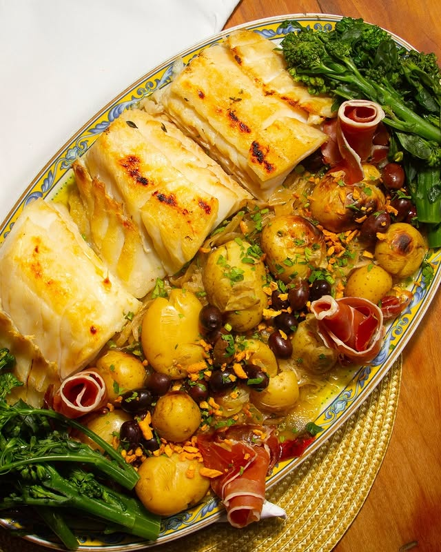
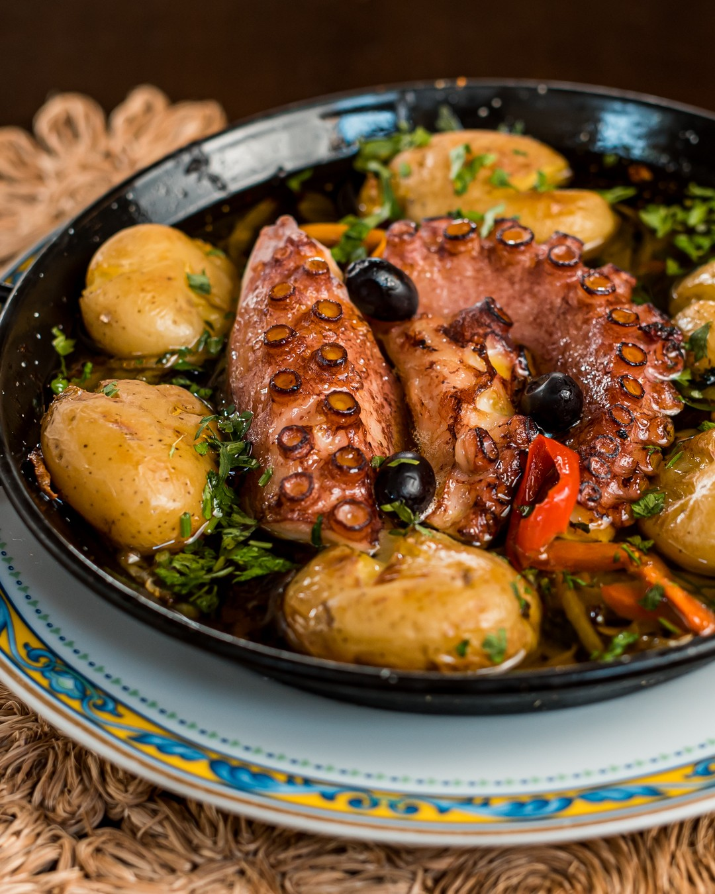
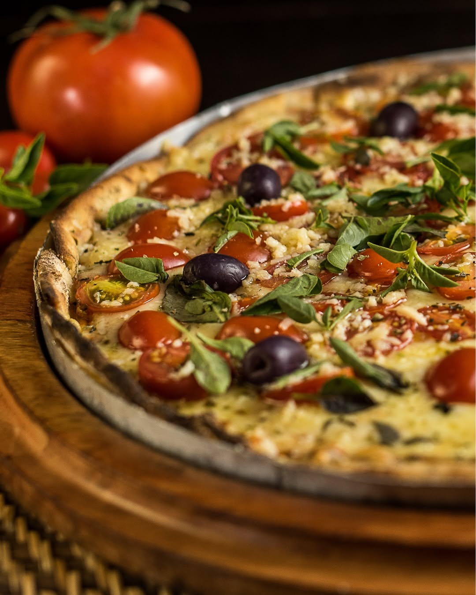
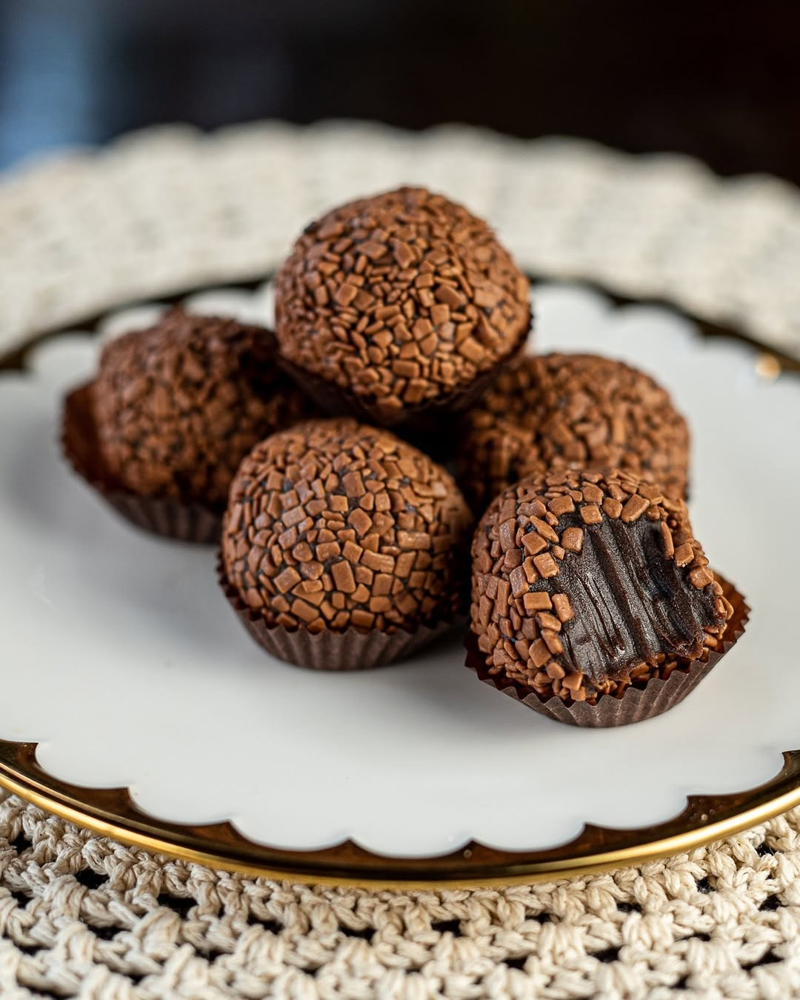
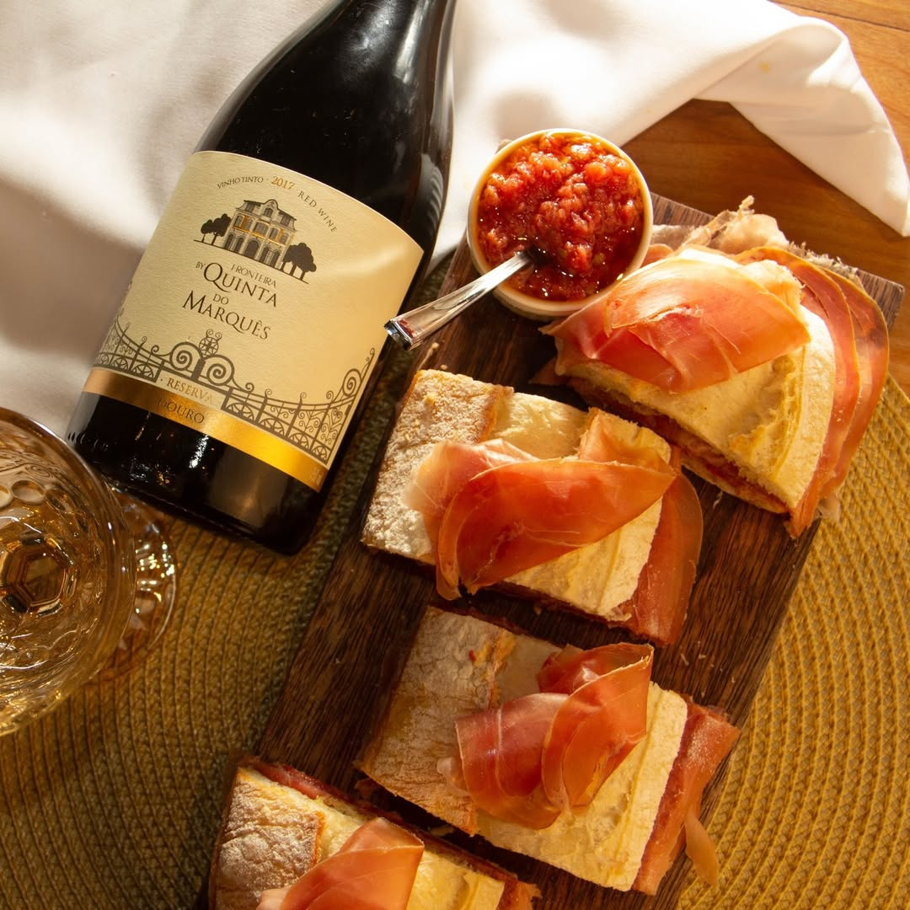
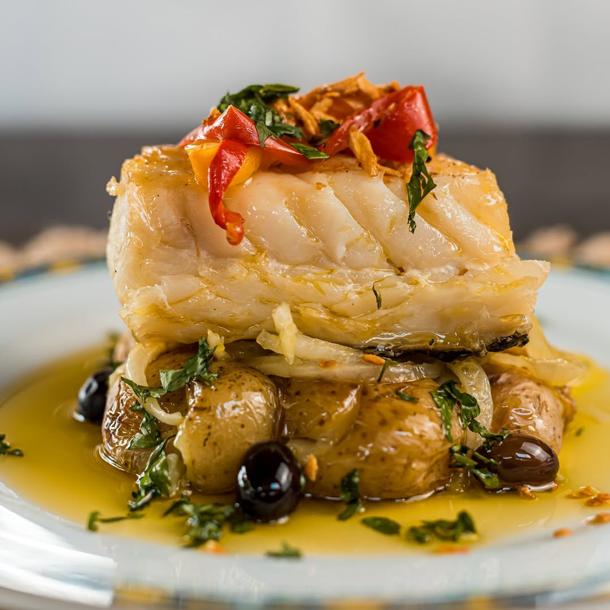

Pastel de Nata
Delicioso doce português com massa crocante e recheio cremoso. Variedade de sabores, como tradicional, Nutella, vinho do Porto, Império cereja, coco e cereja.

Bacalhau à Portuguesa
A arte da cozinha portuguesa reside na simplicidade elegante. Aqui, o nobre bacalhau, as batatas douradas e o presunto se unem, harmonizados pelo azeite, em um prato tradicional e cheio de sabor.

Bolinho de Bacalhau
Um clássico de Portugal. Crocante por fora e macio por dentro, feito com bacalhau desfiado e batatas selecionadas.

Polvo à Lagareiro
Prato robusto e tradicional, servido com muito azeite e sabor marcante, perfeito para quem aprecia a culinária portuguesa autêntica.

Pizza
Pizza é amor em fatias! Massa fininha, ingredientes frescos e aquele toque artesanal que só a Quinta tem. Da primeira à última mordida: sabor, tradição e carinho.

Brigadeiro
A doçura que conquista corações! Nossos brigadeiros são a definição de perfeição: uma explosão de cremosidade no recheio, envoltos por uma camada generosa de granulado que derrete na boca. É impossível resistir a essa delícia que é puro amor em cada mordida!

Vinhos e Jamón Serrano
Sabores indispensáveis para quem ama vinhos e um verdadeiro Jamón Serrano! Combinação que dá água na boca!

Bacalhau
O nosso bacalhau é a expressão máxima da nossa herança portuguesa. Preparado com postas selecionadas, azeite de altíssima qualidade e acompanhamentos tradicionais, este prato é um convite para uma viagem de sabores inesquecíveis.